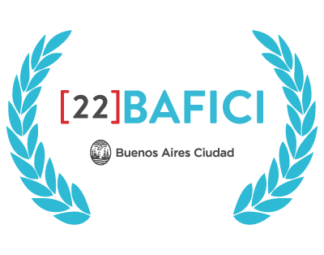
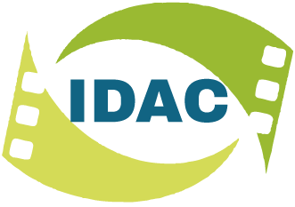

Galería


Largometraje documental en el que a través del seguimiento y los testimonios de distintos personajes, tanto colectivos como individuales, se exponen las vicisitudes que históricamente han debido atravesar (y que aún persisten) los cuerpos femeninos y disidentes para jugar al deporte más popular de nuestro país.
Seleccionado en BAFICI 2021. Subsidio de postproducción del INCAA. Proyecto iniciado en el IDAC como trabajo formativo.

BAFICI 2021
IDACDirección: Matías Guzmán, Maximiliano Rivas y Mariano Alesso
Año: 2021
Duración: 68 min
Rol: Realización integral
Festivales: BAFICI 2021
Disponible en: CINE.AR Play